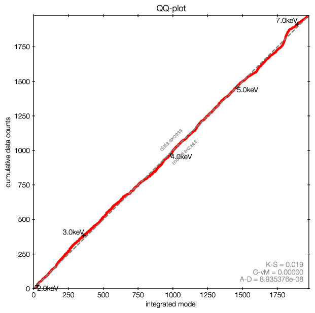

Xspec with BXA¶
This documentation shows how to use BXA with PyXSpec.
Begin by importing bxa in a python session with heasoft loaded:
import bxa.xspec as bxa
from xspec import *
Load your data, define your background model and source model as usual with PyXSpec.
Defining priors¶
Define your background model and source model as usual in xspec. Then define the priors over the free parameters, for example:
# set model and parameters ranges
# val, delta, min, bottom, top, max
m = Model("pow")
m.powerlaw.norm.values = ",,1e-10,1e-10,1e1,1e1" # 10^-10 .. 10
m.powerlaw.PhoIndex.values = ",,1,1,3,3" # 1 .. 3
# define prior
transformations = [
# uniform prior for Photon Index (see other example for
# something more advanced)
bxa.create_uniform_prior_for( m, m.powerlaw.PhoIndex),
# jeffreys prior for scale variable
bxa.create_jeffreys_prior_for(m, m.powerlaw.norm),
# and possibly many more parameters here
]
The above is taken from examples/xspec/example_simplest.py.
Make sure you set the parameter minimum and maximum values to appropriate (a priori reasonable) values. The limits are used to define the uniform and loguniform priors.
You can freeze the parameters you do not want to investigate, but BXA only modifies the parameters specified.
You can also define your own prior functions, which transform unit variables unto the values needed for each parameter. See the UltraNest documentation on priors for more details about this concept. The script examples/xspec/example_advanced_priors.py gives an example of such a custom prior function (my_custom_prior).
API information:
- bxa.xspec.create_uniform_prior_for(model, par)[source]¶
Use for location variables (position) The uniform prior gives equal weight in non-logarithmic scale.
- bxa.xspec.create_loguniform_prior_for(model, par)[source]¶
Use for scale variables (order of magnitude) The Jeffreys prior gives equal weight to each order of magnitude between the minimum and maximum value. Flat in logarithmic scale
Prior Predictive Checks¶
To check that your priors and model is okay and working, create a flipbook of prior sample predictions.
Pick a random sample from the prior:
import numpy from bxa.xspec.solver import set_parameters prior_function = bxa.create_prior_function(transformations) values = prior_function(numpy.random.uniform(size=len(transformations))) set_parameters(transformations, values) print("set to parameters:", values)
make a plot
Repeat this 20 times and look at the plots.
Do the shapes and number of counts expected look like a reasonable representation of your prior expectation?
Running the analysis¶
This runs the fit and stores the result in the specified output folder:
outputfiles_basename = 'simplest/'
solver = bxa.BXASolver(transformations=transformations, outputfiles_basename=outputfiles_basename)
results = solver.run(resume=True)
- class bxa.xspec.BXASolver(transformations, prior_function=None, outputfiles_basename='chains/', resume_from=None)[source]
Run the Bayesian analysis.
The nested sampling package UltraNest is used under the hood.
If prior is None, uniform priors are used on the passed parameters. If parameters is also None, all thawed parameters are used.
- Parameters
transformations – List of parameter transformation definitions
prior_function – set only if you want to specify a custom, non-separable prior
outputfiles_basename – prefix for output filenames.
resume_from – prefix for output filenames of a previous run with similar posterior from which to resume
More information on the concept of prior transformations is available at https://johannesbuchner.github.io/UltraNest/priors.html
The returned results contain posterior samples and the Bayesian evidence. These are also reported on the screen for you.
Parameter posterior plots¶
Credible intervals of the model parameters, and histograms (1d and 2d) of the marginal parameter distributions are plotted in ‘myoutputs/plots/corner.pdf’ for you.

You can also plot them yourself using corner, triangle and getdist, by passing results[‘samples’] to them.
For more information on the corner library used here, see https://corner.readthedocs.io/en/latest/.
Model checking¶
For this functionality, you also need scipy installed.
The following code creates a plot of the convolved posterior model:
plt.figure()
data = solver.posterior_predictions_convolved(nsamples=100)
print('binning for plot...')
binned = bxa.binning(outputfiles_basename=outputfiles_basename,
bins = data['bins'], widths = data['width'],
data = data['data'], models = data['models'])
for point in binned['marked_binned']:
plt.errorbar(marker='o', zorder=-1, **point)
plt.xlim(binned['xlim'])
plt.ylim(binned['ylim'][0], binned['ylim'][1]*2)
plt.gca().set_yscale('log')
if Plot.xAxis == 'keV':
plt.xlabel('Energy [keV]')
elif Plot.xAxis == 'channel':
plt.xlabel('Channel')
plt.ylabel('Counts/s/cm$^2$')
print('saving plot...')
plt.legend()
plt.savefig(outputfiles_basename + 'convolved_posterior.pdf', bbox_inches='tight')
plt.close()

Example of the convolved spectrum with data. For each posterior sample (solution), the parameters are taken and put through the model. All such lines are plotted. Where the region is darker, more lines ended up, and thus it is more likely. The band covers the 1 sigma equivalent model prediction interval (68 per cent), the more transparent band contains 99 per cent of the posterior probability.¶
The data points are adaptively binned to contain at least 20 counts. The error bars are created by asking: which model count rate can produce this amount of counts. In a Poisson process, the inverse incomplete gamma function provides this answer. The error bars show the 10%-90% probability range.
On the colors of the data points:
For all intents and purposes, you can ignore the colors.
The colors are intended to aid the discovery of discrepancies, by using a custom Goodness of Fit measure. In this procedure (gof module), a tree of the bins is built, i.e. in the first layer, every 2 bins are merged, in the second, every 4 bins are merged, etc. Then, the counts in the bins are compared against with the poisson process of the model. The worst case, i.e. the least likely probability over the whole tree is considered. That is, for each bin, the lowest probability of all its merges is kept. Finally, this is multiplied by the number of nodes in the tree (as more comparisons lead to more random chances).
Then, if the probability for the bin is below \(10^{-2}\), the point is marked orange, and if it reaches below \(10^{-6}\), it is marked red.
It is ok to ignore the colors, this computation is not used otherwise.
The following code creates a plot of the unconvolved posterior:
plt.figure()
solver.posterior_predictions_unconvolved(nsamples=100)
ylim = plt.ylim()
# 3 orders of magnitude at most
plt.ylim(max(ylim[0], ylim[1] / 1000), ylim[1])
plt.yscale('log')
plt.xscale('log')
if Plot.xAxis == 'keV':
plt.xlabel('Energy [keV]')
elif Plot.xAxis == 'channel':
plt.xlabel('Channel')
plt.ylabel('Energy flux density [erg/s/cm$^2$/keV]')
print('saving plot...')
plt.legend()
plt.savefig(outputfiles_basename + 'unconvolved_posterior.pdf', bbox_inches='tight')
plt.close()

Example of the unconvolved spectrum. For each posterior sample (solution), the parameters are taken and put through the model. All such lines are plotted. Where the region is darker, more lines ended up, and thus it is more likely.¶
For plotting the model parameters found against the data, use these functions:
- BXASolver.posterior_predictions_unconvolved(component_names=None, plot_args=None, nsamples=400, plottype='model')[source]¶
Plot unconvolved model posterior predictions.
- Parameters
component_names – labels to use. Set to ‘ignore’ to skip plotting a component
plot_args – list of matplotlib.pyplot.plot arguments for each component, e.g. [dict(color=’r’), dict(color=’g’), dict(color=’b’)]
nsamples – number of posterior samples to use (lower is faster)
plottype – type of plot string, passed to xspec.Plot()
- BXASolver.posterior_predictions_convolved(component_names=None, plot_args=None, nsamples=400)[source]¶
Plot convolved model posterior predictions.
Also returns data points for plotting.
- Parameters
component_names – labels to use. Set to ‘ignore’ to skip plotting a component
plot_args – matplotlib.pyplot.plot arguments for each component
nsamples – number of posterior samples to use (lower is faster)
- sinning.binning(bins, widths, data, models, nmin=20)
Bins the data for plotting and checks the model.
Using the gof module, computes a Poisson goodness-of-fit range, i.e. ranges where the model must lie. This is done for multiple binning sizes simultaneously.
- Parameters
outputfiles_basename – not used.
bins – bin location from Plot.x()
widths – bin width from Plot.xErr()
data – counts per bin width from Plot.y() with Plot.background = True and Plot(‘counts’)
model – counts per bin width predicted by the model, from Plot.model()
nmin – number of counts per bin to use for rebinning.
- Returns
* marked_binned (data points binned to contain nmin counts) – a sequence ready to be passed to matplotlib.pyplot.errorbar
* modelrange (range allowed by the data) – ready to be passed to matplotlib.pyplot.fill_between
* and statistics (GoF measure)
Error propagation¶
results[‘samples’] provides access to the posterior samples (similar to a Markov Chain). Use these to propagate errors:
For every row in the chain, compute the quantity of interest
Then, make a histogram of the results, or compute mean and standard deviations.
This preserves the structure of the uncertainty (multiple modes, degeneracies, etc.)
Continuing in Xspec: A chain file, compatible with Xspec chain commands is written for you into <outputfiles_basename>chain.fits. In Xspec, load it using “chain load”. This should set parameters, and compute flux estimates.
Model comparison¶
examples/xspec/model_compare.py shows an example of model selection. Keep in mind what model prior you would like to use.
- Case 1: Multiple models, want to find one best one to use from there on:
follow examples/model_compare.py, and pick the model with the highest evidence
- Case 2: Simpler and more complex models, want to find out which complexity is justified:
follow examples/model_compare.py, and keep the models above a certain threshold
- Case 3: Multiple models which could be correct, only interested in a parameter
Marginalize over the models: Use the posterior samples from each model, and weigh them by the relative probability of the models (weight = exp(lnZ))
Example output:
jbuchner@ds42 $ python model_compare.py absorbed/ line/ simplest/
Model comparison
****************
model simplest : log10(Z) = -1632.7 XXX ruled out
model absorbed : log10(Z) = -7.5 XXX ruled out
model line : log10(Z) = 0.0 <-- GOOD
The last, most likely model was used as normalization.
Uniform model priors are assumed, with a cut of log10(30) to rule out models.
jbuchner@ds42 $
Here, the probability of the second-best model, “absorbed”, is \(10^7.5\) times less likely than the model “line”. As this exceeds our threshold (by a lot!) we can claim the detection of an iron line!
Monte Carlo simulated spectra are recommended to derive a Bayes factor threshold for a preferred false selection rate. You can find an example in the Appendix of Buchner+14 and in the ultranest tutorial.
Experiment design¶
We want to to evaluate whether a planned experiment can detect features or constrain parameters, i.e. determine the discriminatory power of future configurations/surveys/missions.
For this, simulate a few spectra using the appropriate response.
- Case 1: Can the experiment constrain the parameters?
Analyse and check what fraction of the posterior samples lie inside/outside the region of interest.
- Case 2: Can the experiment distinguish between two models?
Model selection as above.
- Case 3: Which sources (redshift range, luminosity, etc) can be distinguished?
Compute a grid of spectra. Do model selection at each point in the grid.
Model discovery¶
Is the model the right one? Is there more in the data? These questions can not be answered in a statistical way, but what we can do is
generate ideas on what models could fit better
test those models for significance with model selection
For the first point, Quantile-Quantile plots provide a unbinned, less noisy alternative to residual plots.

QQ plot example (left), with the corresponding spectrum for comparison (right).
In these plots, for each energy the number of counts observed with lower energy are plotted on one axis, while the predicted are on the other axis. If model and data agree perfectly, this would be a straight line. Deviances are indications of possible mis-fits.
This example is almost a perfect fit! You can see a offset growing at 6-7 keV, which remains at higher energies. This indicates that the data has more counts than the model there.
As the growth is in a S-shape, it is probably a Gaussian (see its cumulative density function).
Refer to the appendix of the accompaning paper for more examples.
For Xspec, the qq function in the qq module allows you to create such plots easily:
data = data['data'], models = data['models'])
for point in binned['marked_binned']:
plt.errorbar(marker='o', zorder=-1, **point)
plt.xlim(binned['xlim'])
plt.ylim(binned['ylim'][0], binned['ylim'][1]*2)
plt.gca().set_yscale('log')
if Plot.xAxis == 'keV':
plt.xlabel('Energy [keV]')
- bxa.xspec.qq.qq(prefix, markers=5, annotate=True)[source]¶
Create a quantile-quantile plot for model discovery (deviations in data from model).
The current data and model is used, so call set_best_fit(analyzer, transformations) before, to get the qq plot at the best fit.
markers: list of energies/channels (whichever the current plotting xaxis unit) or number of equally spaced markers between minimum+maximum.
annotate: add information to the plot
Refer to the accompaning paper, which gives an introduction and detailed discussion on the methodology.